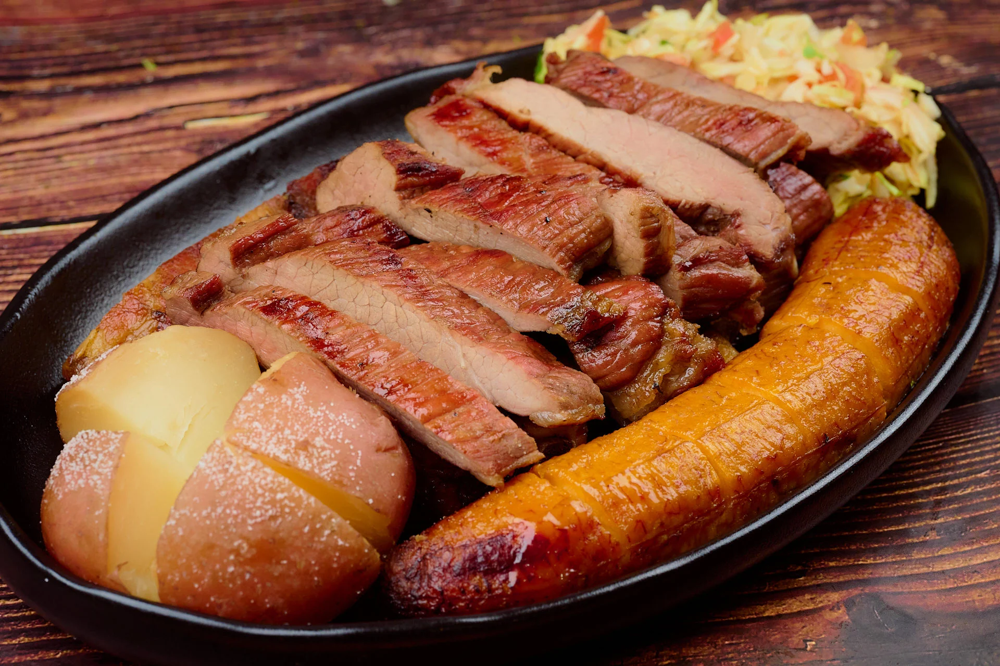
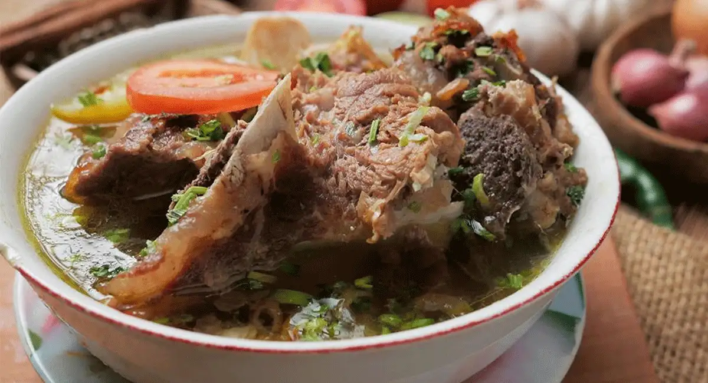
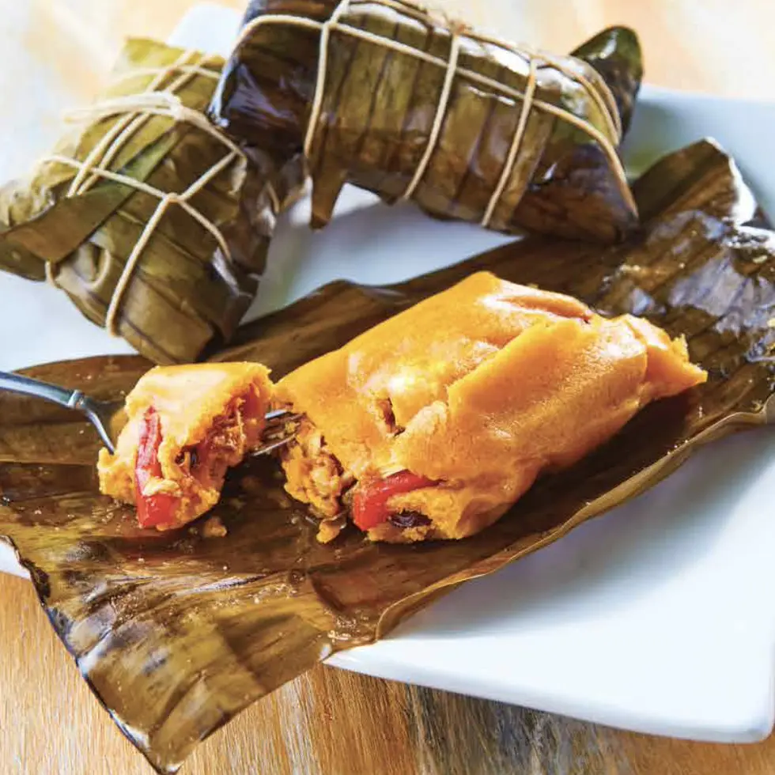
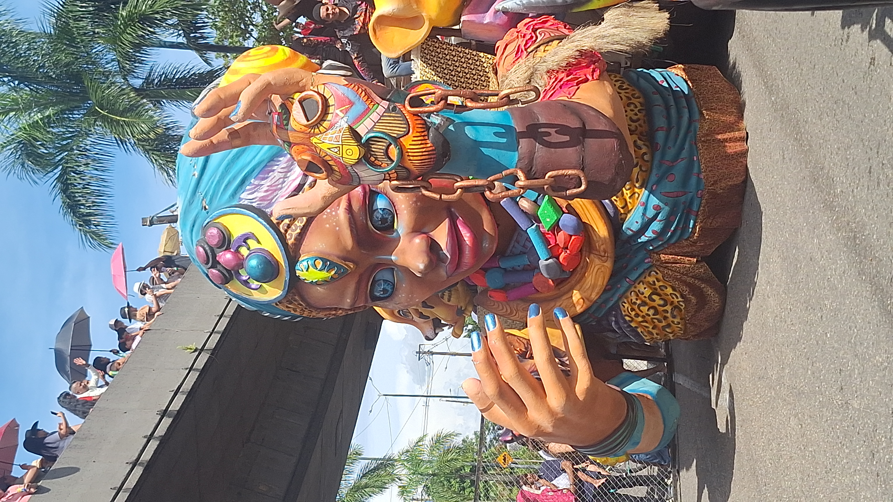
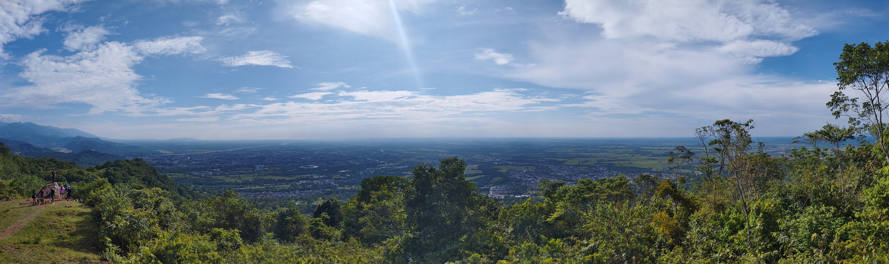
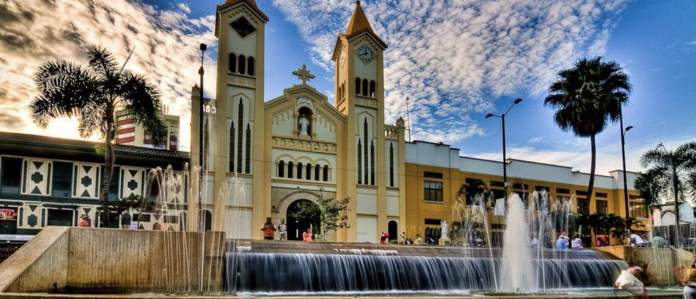
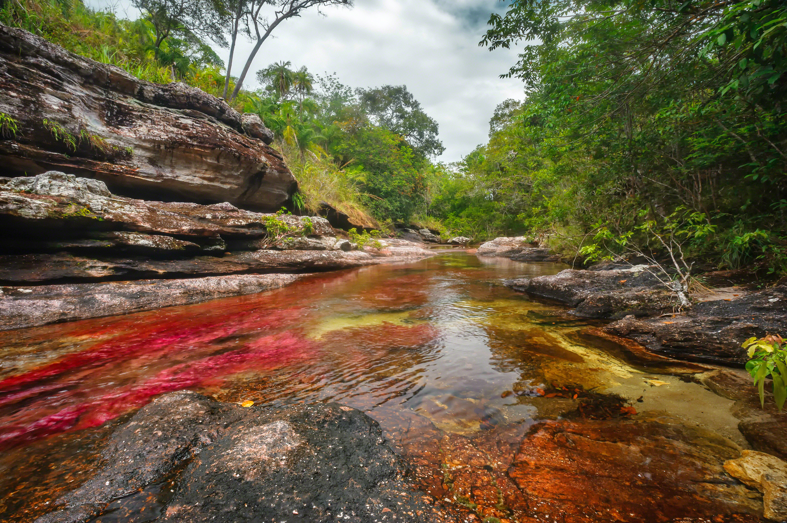
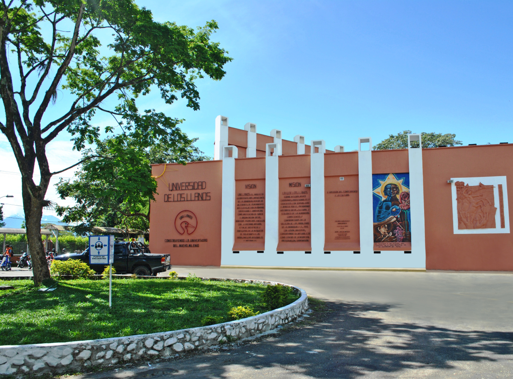
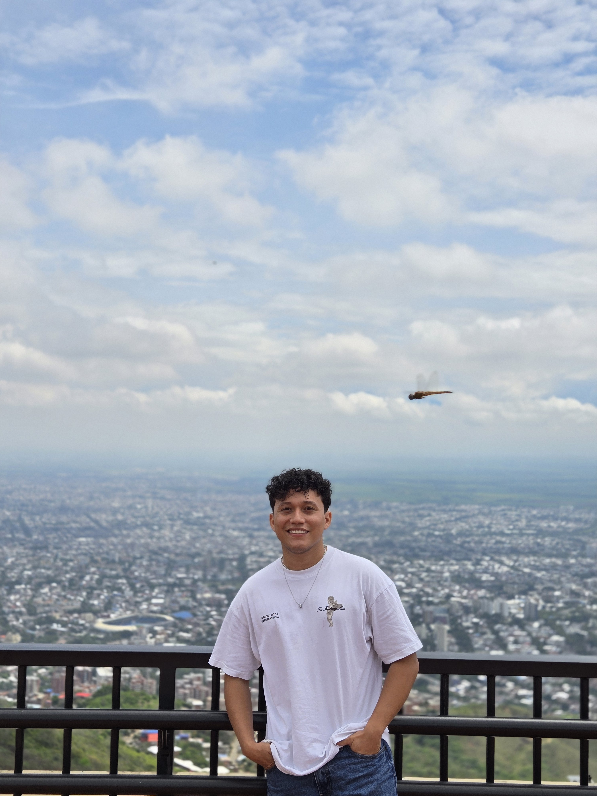
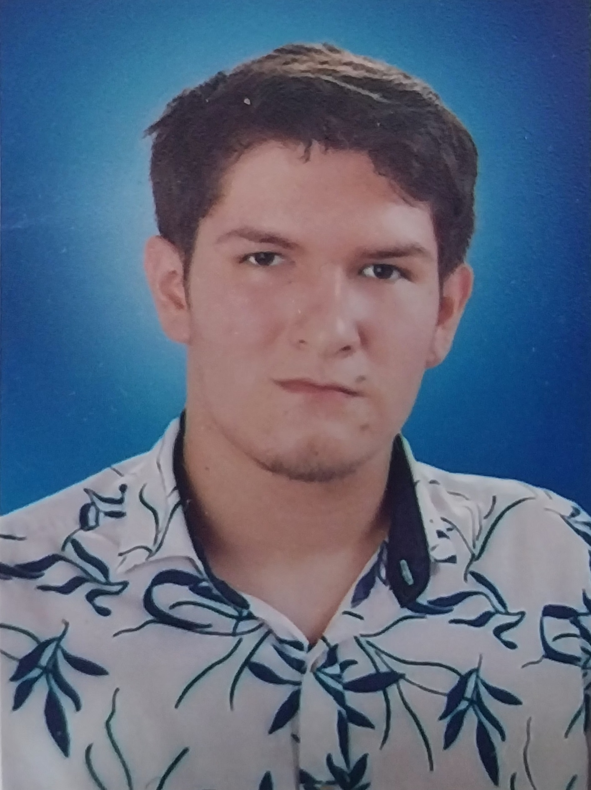

Welcome to UniLlanos Intranet
Gateway to the Colombian Eastern Plains (Villavicencio, Meta). Connected via Software-Defined WAN over ZeroTier and secured with X.509 TLS 1.3 encryption to Seneca Polytechnic in Toronto, Canada.
Authentic Llanero Gastronomy

Carne a la Llanera (Mamona)
The undisputed culinary emblem of the Colombian plains. Prime beef cuts are skewered onto tall wooden stakes and slow-roasted for hours circling open wood-fire embers. The crispy exterior and tender meat paired with boiled yuca and fried plantains is the centerpiece of every Sunday gathering and regional wedding.

Caldo de Costilla
The essential dawn recovery dish. A steaming broth slow-simmered with beef ribs, potatoes, garlic, cilantro, and spring onions. Served piping hot at roadside asaderos to greet the sunrise after vibrant festival celebrations.

Hayaca Llanera
An artisanal delicacy made with seasoned corn dough filled with tender beef, pork, chicken, vegetables, and aromatic spices, wrapped carefully in smoked plantain leaves and gently steamed to lock in rich, earthy aromas.
Cultural Heritage, Music & Landscape

Torneo del Joropo & Joropódromo
Villavicencio's premier cultural spectacle. Thousands of dancing couples parade along the avenues in vibrant ruffled gowns and traditional hats, performing lightning-fast synchronized foot-stomping (zapateo) driven by the driving rhythm of the llanero harp, cuatro, and maracas.

Sunsets of the Orinoco Basin
The plains of Meta extend towards the Orinoco River, famous worldwide for dramatic crimson and golden sunsets against silhouette moriche palm corridors and open grazing lands where llanero cowboy heritage thrives.

Villavicencio Metropolis
Nestled precisely where the dramatic Eastern Andes foothills descend into the endless tropical savannas. A thriving educational and economic capital combining modern infrastructure with deep agrarian roots.
Caño Cristales & University Campus

Caño Cristales: River of Five Colors
Located in the Serranía de la Macarena, Meta. Between July and November, blooming endemic aquatic plants (Macarenia clavigera) turn the riverbed into vibrant shades of red, fuchsia, yellow, green, and blue, hailed globally as the most beautiful river on Earth.

UniLlanos Barcelona Campus
Unlike concrete-heavy urban universities, Universidad de los Llanos is embedded directly into protected natural forest corridors. It is everyday life to spot free-roaming iguanas, primates, and tropical birds while walking between telecommunications and electronics laboratories.
UniLlanos Engineering Team

Miguel Ángel Rodríguez Payares
Specializing in embedded systems, microcontroller firmware, network security, and 3D CAD parametric modeling. Lead server architect for this COIL SD-WAN deployment.

Luis Alejandro León Velásquez
Passionate about systems development, circuit design, and microcontroller automation. Dedicated mindset with international academic exchange experience in Mexico.